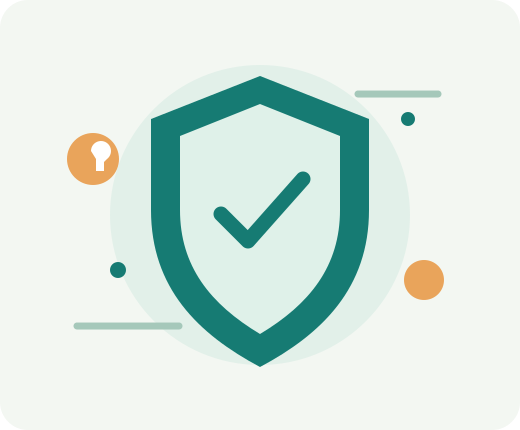
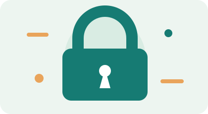

SECURITY STARTS HERE
把安全習慣，
變成日常的一部分。
點選下方主題，認識簡單實用的防護方法。每個頁面都整理了可以立即採取的小行動，也附上可信的延伸資料。

打造可靠密碼
了解長度、多因素驗證與密碼管理的基本原則。
閱讀指南 →02 / 防詐
看懂可疑訊息
從寄件者、網址與急迫語氣找出常見警訊。
閱讀指南 →03 / 隱私
保護個人資料
分享之前停一秒，掌握裝置與帳號的隱私設定。
閱讀指南 →A SMALL CHECK, A BIG DIFFERENCE
今天就做一次快速檢查。
從更新裝置、檢查帳號登入紀錄開始，讓好習慣持續下去。